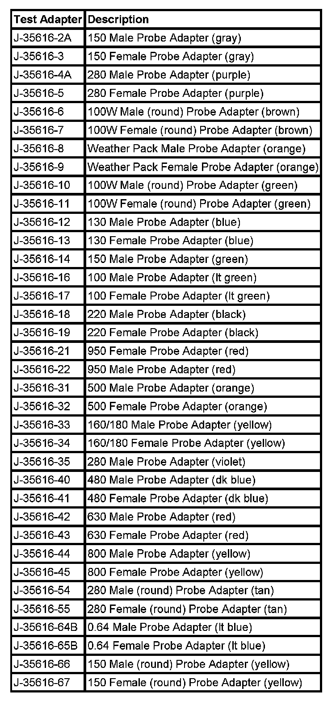

Probing Electrical Connectors
PROBING ELECTRICAL CONNECTORS
IMPORTANT: Always be sure to reinstall the connector position assurance (CPA) and terminal position assurance (TPA) when reconnecting connectors or replacing terminals.
Frontprobe
Disconnect the connector and probe the terminals from the mating side (front) of the connector.
IMPORTANT: When probing female 0.64 terminals, it is important to use the correct adapter. There have been some revisions to the test adapter for 0.64 terminals. The proper adapter for 0.64 terminals is the J 35616-64B which has a gold terminal and a black wire between the base and tip. Failure to use the proper test adapter may result in damage to the terminal being tested and improper diagnosis.
NOTE Do not insert test equipment probes (DVOM etc.) into any connector or fuse block terminal. The diameter of the test probes will deform most terminals. A deformed terminal will cause a poor connection, which will result in a system failure. Always use the J-35616 GM-Approved Terminal Test Kit in order to front probe terminals. Do not use paper clips or other substitutes to probe terminals.
When using the J-35616 GM-Approved Terminal Test Kit, ensure the terminal test adapter choice is the correct size for the connector terminal. Do not visually choose the terminal test adapter because some connector terminal cavities may appear larger than the actual terminal in the cavity. Using a larger terminal test adapter will damage the terminal. Refer to the J-35616 GM-Approved Terminal Test Kit label on the inside of the J-35616 GM-Approved Terminal Test Kit for the correct adapter along with the connector end view for terminal size.

Refer to the table as a guide in selecting the correct test adapter for frontprobing connectors.
Backprobe
IMPORTANT: Do not disconnect the connector and probe the terminals from the harness side (back) of the connector.
- Backprobe connector terminals only when specifically required in diagnostic procedures.
- Do not backprobe a sealed (Weather Pack(R)) connector, less than a 280 series Metri-Pack connector, a Micro-Pack connector, or a flat wire (dock and lock) connector.
- Backprobing can be a source of damage to connector terminals. Use care in order to avoid deforming the terminal, either by forcing the test probe too far into the cavity or by using too large of a test probe.
- After backprobing any connector, inspect for terminal damage. If terminal damage is suspected, test for proper terminal contact.